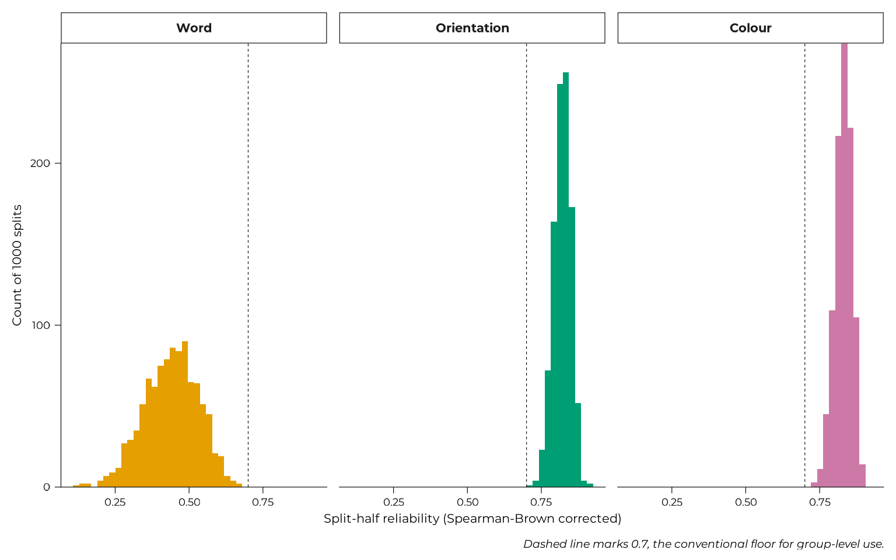

Task validity: what the WM-FTT measures well, and what it does not
Source:vignettes/articles/task-validity.Rmd
task-validity.Rmd
# The three constants the chunks below use, set here rather than hidden in
# the setup chunk, so "repeated 1000 times" and "of the 63 that exist" can
# be tied to something.
n_splits <- 1000
trials_per_feature <- 63L
feature_labels <- c(word = "Word", angle = "Orientation", color = "Colour")The scoring page defines the three recall scores. This page asks the prior question every result on this site depends on: are they reliable enough to carry an individual-differences claim?
For two of the three features the answer is yes. For the third it is no, and that is a fact about the task rather than about the metric. The questionnaire psychometrics page asks the same question of the instruments.
Everything here is v1 only, per the version scope page.
The data this page works from
The same frames the scoring page builds, reproduced so this page stands alone.
# 1. Experimental-block rows only. Tutorial rows carry placeholder values,
# and training rows precede the blocks by design.
block_trials <- all_data |>
dplyr::filter(grepl("^expe_block", expe_phase)) |>
dplyr::mutate(
participant = paste(id, version, sep = "_"), # one id spans two versions
trial_id = paste(expe_phase, trial_number, sep = "_"),
position_in_trial = (item_number - 1L) %% 3L + 1L
)
# 2. One row per stimulus per feature: score, whether it was answered.
trials_by_feature <- block_trials |>
dplyr::select(
id, participant, version, trial_id, position_in_trial,
vviq = vviq_total_score,
score_word, score_angle, score_color,
responded_word, responded_angle, responded_color
) |>
tidyr::pivot_longer(
cols = c(tidyselect::starts_with("score_"),
tidyselect::starts_with("responded_")),
names_to = c(".value", "feature"),
names_pattern = "(score|responded)_(word|angle|color)"
) |>
dplyr::mutate(
feature = factor(feature, levels = c("word", "angle", "color"),
labels = c("Word", "Orientation", "Colour"))
)
# 3. v1 alone is the primary analysis sample; see section 4.
v1_trials <- dplyr::filter(trials_by_feature, version == "v1")
# 4. One mean per participant per feature, over answered items only.
v1_participant_means <- v1_trials |>
dplyr::filter(responded) |>
dplyr::summarise(
mean_score = mean(score),
n_answered = dplyr::n(),
vviq = dplyr::first(vviq),
.by = c(id, feature)
)
dplyr::slice_head(trials_by_feature, n = 6) |>
knitr::kable(digits = 3, caption = "trials_by_feature: first six rows")| id | participant | version | trial_id | position_in_trial | vviq | feature | score | responded |
|---|---|---|---|---|---|---|---|---|
| aacu64091390979054fksk | aacu64091390979054fksk_v1 | v1 | expe_block_1_1 | 1 | 16 | Word | 1.000 | TRUE |
| aacu64091390979054fksk | aacu64091390979054fksk_v1 | v1 | expe_block_1_1 | 1 | 16 | Orientation | 0.383 | TRUE |
| aacu64091390979054fksk | aacu64091390979054fksk_v1 | v1 | expe_block_1_1 | 1 | 16 | Colour | 0.967 | TRUE |
| aacu64091390979054fksk | aacu64091390979054fksk_v1 | v1 | expe_block_1_1 | 2 | 16 | Word | 0.200 | TRUE |
| aacu64091390979054fksk | aacu64091390979054fksk_v1 | v1 | expe_block_1_1 | 2 | 16 | Orientation | 0.000 | FALSE |
| aacu64091390979054fksk | aacu64091390979054fksk_v1 | v1 | expe_block_1_1 | 2 | 16 | Colour | 0.000 | FALSE |
1. Reliability
Splits are drawn over trials rather than items, because items within a trial share an encoding episode and there is a within-trial primacy effect:
v1_trials |>
dplyr::filter(responded) |>
dplyr::summarise(mean_score = mean(score),
.by = c(feature, position_in_trial)) |>
tidyr::pivot_wider(names_from = position_in_trial, values_from = mean_score,
names_prefix = "position_") |>
dplyr::mutate(primacy_drop = position_1 - position_3) |>
knitr::kable(digits = 3,
caption = "Mean score by serial position within the trial")| feature | position_1 | position_2 | position_3 | primacy_drop |
|---|---|---|---|---|
| Word | 0.980 | 0.933 | 0.882 | 0.098 |
| Orientation | 0.781 | 0.743 | 0.736 | 0.046 |
| Colour | 0.884 | 0.854 | 0.825 | 0.059 |
Each trial’s three items therefore stay together, and the split is repeated 1000 times rather than relying on one arbitrary odd/even partition.
The engagement threshold is derived rather than chosen: a participant contributes to a feature only if their mean has a standard error of at most half the between-person SD.
engagement_thresholds <- v1_trials |>
dplyr::filter(responded) |>
dplyr::summarise(participant_mean = mean(score),
sd_within_participant = sd(score),
.by = c(feature, id)) |>
dplyr::summarise(
sd_within_participant = median(sd_within_participant, na.rm = TRUE),
sd_between_participants = sd(participant_mean),
.by = feature
) |>
dplyr::mutate(
items_needed = ceiling(
(sd_within_participant / (0.5 * sd_between_participants))^2),
items_available = trials_per_feature,
# Fall back to half the items where the target is unreachable.
threshold_used = pmin(items_needed, 32L)
)
knitr::kable(engagement_thresholds, digits = 3,
caption = "Items needed for a participant mean worth comparing")| feature | sd_within_participant | sd_between_participants | items_needed | items_available | threshold_used |
|---|---|---|---|---|---|
| Word | 0.219 | 0.046 | 93 | 63 | 32 |
| Orientation | 0.302 | 0.131 | 22 | 63 | 22 |
| Colour | 0.240 | 0.090 | 29 | 63 | 29 |
Word’s requirement cannot be met. It asks for 93
items of the 63 that exist, because its between-person SD among
responders (0.046) is small relative to within-person item noise
(0.219). A floor of 32 items is used instead, recorded as a
data-sufficiency rule and not a precision guarantee. The
pmin() above applies it as a cap on the
requirement, not as a minimum: where the precision target asks
for more items than exist, 32 is substituted.
One thing about what happens downstream. The derivation above is
recomputed live on this page, but the filter every modelling page
applies is engaged_ids(), which reads the
hard-coded wm_thresholds():
wm_thresholds()
#> word angle color
#> 32 22 29They agree today. They are hard-coded deliberately, because the rule was fixed before any contact with VVIQ and must not drift with the sample it is applied to. If this page’s re-computation ever diverges from that vector, the vector is what the analyses used, and the divergence is the finding.
eligible_participants <- v1_participant_means |>
dplyr::left_join(dplyr::select(engagement_thresholds, feature, threshold_used),
by = "feature") |>
dplyr::filter(n_answered >= threshold_used) |>
dplyr::select(id, feature)
# split_half_reliability() and spearman_brown() are package functions, so
# this page and inst/scripts/06a-reliability.R compute the same quantity
# with the same code rather than two implementations of it.
v1_block <- block_trials |>
dplyr::filter(version == "v1") |>
dplyr::rename(trial_uid = trial_id)
# Splits are drawn over trials, so these are needed here and again by the
# compositional stability check below.
trial_ids <- unique(v1_block$trial_uid)
half_size <- length(trial_ids) %/% 2
split_half_draws <- lapply(
c(word = "word", angle = "angle", color = "color"),
\(feature) spearman_brown(
split_half_reliability(v1_block, feature, n_splits = n_splits)
)
)
reliability_table <-
tibble::tibble(
feature = feature_labels[names(split_half_draws)],
reliability = vapply(split_half_draws, stats::median, numeric(1),
na.rm = TRUE),
lower_95 = vapply(split_half_draws, stats::quantile, numeric(1),
probs = 0.025, na.rm = TRUE),
upper_95 = vapply(split_half_draws, stats::quantile, numeric(1),
probs = 0.975, na.rm = TRUE)
) |>
dplyr::left_join(dplyr::count(eligible_participants, feature,
name = "participants"),
by = "feature") |>
dplyr::select(feature, participants, reliability, lower_95, upper_95)
knitr::kable(reliability_table, digits = 3,
caption = "Split-half reliability, Spearman-Brown corrected")| feature | participants | reliability | lower_95 | upper_95 |
|---|---|---|---|---|
| Word | 87 | 0.445 | 0.251 | 0.605 |
| Orientation | 82 | 0.822 | 0.760 | 0.872 |
| Colour | 87 | 0.832 | 0.772 | 0.882 |
plot_split_half(split_half_draws, base_size = 16)
Orientation (0.82) and colour (0.83) clear the conventional 0.80 mark for individual-level interpretation. Word (0.45) does not clear the 0.70 floor for group-level use. That is the same fact as the threshold failure, seen from the other side.
Word does not function as an individual-differences measure in this sample. The metric is not at fault; Gonthier’s formula works exactly as designed. Single-word recall at this exposure is simply too easy to discriminate between people. No downstream model should make an individual-differences claim about word, whatever its coefficients say.
ids_clearing_all_features <- eligible_participants |>
dplyr::count(id) |>
dplyr::filter(n == 3) |>
dplyr::pull(id)
# Isometric log-ratio coordinates from one half of the trials, via the
# package functions rather than a local copy of the transform. The
# partition is word vs (colour and orientation), which is the one the
# modelling pages use, so this stability estimate applies to those
# coordinates and not to some other rotation of them.
ilr_coordinates_over <- function(chosen_trials) {
parts <- v1_block |>
dplyr::filter(id %in% ids_clearing_all_features,
trial_uid %in% chosen_trials) |>
compose_features(id)
parts <- parts[stats::complete.cases(parts), ]
dplyr::bind_cols(
dplyr::select(parts, id),
ilr_coords(dplyr::select(parts, tidyselect::starts_with("part_")))
)
}
composition_stability <- purrr::map(seq_len(n_splits), \(iteration) {
first_half <- sample(trial_ids, half_size)
dplyr::inner_join(
ilr_coordinates_over(first_half),
ilr_coordinates_over(setdiff(trial_ids, first_half)),
by = "id", suffix = c("_first", "_second")
) |>
dplyr::summarise(ilr1 = cor(ilr1_first, ilr1_second),
ilr2 = cor(ilr2_first, ilr2_second))
}) |>
purrr::list_rbind() |>
dplyr::summarise(dplyr::across(
c(ilr1, ilr2), \(x) spearman_brown(median(x, na.rm = TRUE)))) |>
tidyr::pivot_longer(everything(), names_to = "coordinate",
values_to = "stability") |>
dplyr::mutate(contrast = c("Word vs (colour and orientation)",
"Colour vs orientation"))
knitr::kable(composition_stability, digits = 3,
caption = "Split-half stability of the compositional profile")| coordinate | stability | contrast |
|---|---|---|
| ilr1 | 0.771 | Word vs (colour and orientation) |
| ilr2 | 0.721 | Colour vs orientation |
The compositional profile fares better than its parts would suggest, on the 81 participants clearing all three thresholds. A ratio can carry information a level does not, though the first coordinate rests partly on word, and its interpretation should not lean on word as a well-measured quantity.
2. What this supports
Orientation and colour scores support individual-differences analysis. Word scores do not, and should be reported with the measurement caveat attached. The compositional profile is stable enough to interpret, with the same caveat on its verbal coordinate.
Self-reported strategy and behavioural allocation are not the same construct:
self_reported_priority <- block_trials |>
dplyr::filter(version == "v1") |>
dplyr::distinct(id, .keep_all = TRUE) |>
dplyr::select(id, strategy_items) |>
tidyr::unnest(strategy_items) |>
dplyr::select(id, tidyselect::contains("scoring_strat")) |>
tidyr::pivot_longer(-id, values_to = "named_feature",
values_transform = as.character) |>
dplyr::filter(named_feature %in% c("words", "colours", "orientations")) |>
dplyr::summarise(
priority = dplyr::if_else(dplyr::n() > 1, "multiple",
dplyr::first(named_feature)),
.by = id
)
v1_compositions <- v1_participant_means |>
dplyr::filter(id %in% ids_clearing_all_features) |>
dplyr::mutate(proportion = mean_score / sum(mean_score), .by = id) |>
dplyr::select(id, feature, proportion) |>
tidyr::pivot_wider(names_from = feature, values_from = proportion)
v1_compositions |>
dplyr::left_join(self_reported_priority, by = "id") |>
tidyr::replace_na(list(priority = "none/other")) |>
dplyr::summarise(dplyr::across(c(Word, Orientation, Colour), mean),
participants = dplyr::n(),
.by = priority) |>
knitr::kable(digits = 3,
caption = "Behavioural composition by self-reported priority")| priority | Word | Orientation | Colour | participants |
|---|---|---|---|---|
| none/other | 0.362 | 0.298 | 0.340 | 5 |
| words | 0.378 | 0.295 | 0.327 | 39 |
| multiple | 0.361 | 0.296 | 0.343 | 36 |
| orientations | 0.371 | 0.234 | 0.394 | 1 |
Behavioural compositions barely differ between participants who named different priorities, showing that the report and the behaviour are not interchangeable per person. This is not a validity failure in itself, but this dissociation shows that the behaviour and self-report reflect “preferences” in different ways and cannot be used as substitutes for each other yet.
Continuing through the Extended Online Report: this page follows versions. To keep reading in order, continue to questionnaire psychometrics next. Or skip ahead to the analysis, which explains what the modelling pages do and why.
#> ─ Session info ───────────────────────────────────────────────────────────────
#> setting value
#> version R version 4.6.1 (2026-06-24)
#> os Ubuntu 22.04.5 LTS
#> system x86_64, linux-gnu
#> ui X11
#> language en
#> collate C.UTF-8
#> ctype C.UTF-8
#> tz UTC
#> date 2026-08-31
#> pandoc 3.8.3 @ /opt/hostedtoolcache/pandoc/3.8.3/x64/ (via rmarkdown)
#> quarto NA
#>
#> ─ Packages ───────────────────────────────────────────────────────────────────
#> package * version date (UTC) lib source
#> aphantasiaWMStrats * 0.1 2026-08-31 [1] local
#> bslib 0.12.0 2026-08-04 [2] CRAN (R 4.6.1)
#> cachem 1.1.0 2024-05-16 [2] CRAN (R 4.6.1)
#> cli 3.6.6 2026-04-09 [2] CRAN (R 4.6.1)
#> crayon 1.5.3 2024-06-20 [2] CRAN (R 4.6.1)
#> curl 8.0.0 2026-08-25 [2] CRAN (R 4.6.1)
#> desc 1.4.3 2023-12-10 [2] CRAN (R 4.6.1)
#> digest 0.6.39 2025-11-19 [2] CRAN (R 4.6.1)
#> dplyr 1.2.1 2026-04-03 [2] CRAN (R 4.6.1)
#> evaluate 1.0.5 2025-08-27 [2] CRAN (R 4.6.1)
#> farver 2.1.2 2024-05-13 [2] CRAN (R 4.6.1)
#> fastmap 1.2.0 2024-05-15 [2] CRAN (R 4.6.1)
#> fs 2.1.0 2026-04-18 [2] CRAN (R 4.6.1)
#> generics 0.1.4 2025-05-09 [2] CRAN (R 4.6.1)
#> ggplot2 * 4.0.3 2026-04-22 [2] CRAN (R 4.6.1)
#> glue 1.8.1 2026-04-17 [2] CRAN (R 4.6.1)
#> gtable 0.3.6 2024-10-25 [2] CRAN (R 4.6.1)
#> htmltools 0.5.9 2025-12-04 [2] CRAN (R 4.6.1)
#> jquerylib 0.1.4 2021-04-26 [2] CRAN (R 4.6.1)
#> jsonlite 2.0.0 2025-03-27 [2] CRAN (R 4.6.1)
#> knitr 1.51 2025-12-20 [2] CRAN (R 4.6.1)
#> labeling 0.4.3 2023-08-29 [2] CRAN (R 4.6.1)
#> lifecycle 1.0.5 2026-01-08 [2] CRAN (R 4.6.1)
#> magrittr 2.0.5 2026-04-04 [2] CRAN (R 4.6.1)
#> otel 0.2.0 2025-08-29 [2] CRAN (R 4.6.1)
#> pillar 1.11.1 2025-09-17 [2] CRAN (R 4.6.1)
#> pkgconfig 2.0.3 2019-09-22 [2] CRAN (R 4.6.1)
#> pkgdown 2.2.1 2026-07-07 [2] any (@2.2.1)
#> purrr 1.2.2 2026-04-10 [2] CRAN (R 4.6.1)
#> R6 2.6.1 2025-02-15 [2] CRAN (R 4.6.1)
#> ragg 1.5.2 2026-03-23 [2] CRAN (R 4.6.1)
#> RColorBrewer 1.1-3 2022-04-03 [2] CRAN (R 4.6.1)
#> renv 1.0.7 2024-04-11 [2] RSPM (R 4.6.1)
#> rlang 1.3.0 2026-07-05 [2] CRAN (R 4.6.1)
#> rmarkdown 2.31 2026-03-26 [2] CRAN (R 4.6.1)
#> S7 0.2.2 2026-04-22 [2] CRAN (R 4.6.1)
#> sass 0.4.10 2025-04-11 [2] CRAN (R 4.6.1)
#> scales 1.4.0 2025-04-24 [2] CRAN (R 4.6.1)
#> sessioninfo 1.2.4 2026-06-04 [2] CRAN (R 4.6.1)
#> showtext 0.9-8 2026-03-21 [2] CRAN (R 4.6.1)
#> showtextdb 3.0 2020-06-04 [2] CRAN (R 4.6.1)
#> sysfonts 0.8.9 2024-03-02 [2] CRAN (R 4.6.1)
#> systemfonts 1.3.2 2026-03-05 [2] CRAN (R 4.6.1)
#> textshaping 1.0.5 2026-03-06 [2] CRAN (R 4.6.1)
#> tibble 3.3.1 2026-01-11 [2] CRAN (R 4.6.1)
#> tidyr 1.3.2 2025-12-19 [2] CRAN (R 4.6.1)
#> tidyselect 1.2.1 2024-03-11 [2] CRAN (R 4.6.1)
#> vctrs 0.7.3 2026-04-11 [2] CRAN (R 4.6.1)
#> withr 3.0.3 2026-06-19 [2] CRAN (R 4.6.1)
#> xfun 0.60 2026-07-09 [2] CRAN (R 4.6.1)
#> yaml 2.3.12 2025-12-10 [2] CRAN (R 4.6.1)
#>
#> [1] /tmp/Rtmp71i6jb/temp_libpath868c7c39749d
#> [2] /home/runner/.cache/R/renv/library/aphantasiaWMStrats-f7ce8556/linux-ubuntu-jammy/R-4.6/x86_64-pc-linux-gnu
#> [3] /home/runner/.cache/R/renv/sandbox/linux-ubuntu-jammy/R-4.6/x86_64-pc-linux-gnu/e7c0fad7
#> * ── Packages attached to the search path.
#>
#> ──────────────────────────────────────────────────────────────────────────────